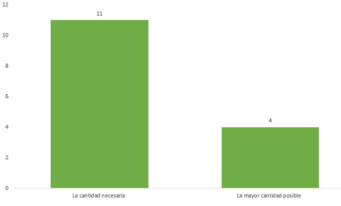

El objetivo de este estudio es determinar el nivel de contribución que tienen los desarrolladores ecuatorianos dentro de la comunidad de Stack Overflow en español (https://es.stackoverflow.com); por ello determinar los principales desafíos técnicos a los que se enfrentan resulta indispensable.
La encuesta está compuesta por un total de 23 preguntas, agrupadas en cinco secciones con la finalidad de conocer datos específicos en función de los factores que componen las preguntas. Algunas preguntas son del tipo condicional, es decir, dependiendo de la respuesta del encuestado se mostraba la siguiente pregunta. Considerando lo anterior, cada encuestado respondió alrededor de 15 preguntas. El formato completo de la encuesta se encuentra disponible en:https://goo.gl/N2oVXJ.
Los resultados mostrados a continuación pertenecen a aquellas preguntas con escalas nominales y Likert.
P2. ¿Cuál es tu ocupación?
P3. ¿Cuánto tiempo llevas formando parte de la comunidad de Stack Overflow en español?
P4. Al momento de tener alguna duda relacionada al desarrollo de software, ¿dónde recurres?
P5. ¿Cómo llegaste a conocer acerca de Stack Overflow (SO) - Stack Overflow en español (SOES)?
P6. ¿Cuál es su principal motivo para acceder a Stack Overflow en español?
P7. ¿Sientes que puedes contribuir de forma activa dentro de una comunidad en línea para desarrolladores de software?
P9. ¿Crees que alguna de tus habilidades ha mejorado con el uso de Stack Overflow en español?
P12. ¿Encuentras dificultad al momento de realizar un Post?
P14. ¿Cómo y de qué manera contribuye con Stack Overflow en español?
P15. ¿Con que frecuencia las respuestas obtenidas a tus preguntas te son útil?
P16. ¿Con que frecuencia tus respuestas son marcadas como aceptadas?
P17. ¿Te encuentras satisfecho con el tiempo promedio en el que tus preguntas reciben un aporte (respuesta o comentario)?
P18. Las contribuciones que realizas dentro de Stack Overflow en español están principalmente relacionadas con
P19. Al momento de seleccionar Etiquetas (Tags) para tus preguntas te fijas de usar

P20. ¿Su participación en Stack Overflow en español es diferente al sitio web en inglés de Stack Overflow (SO)?